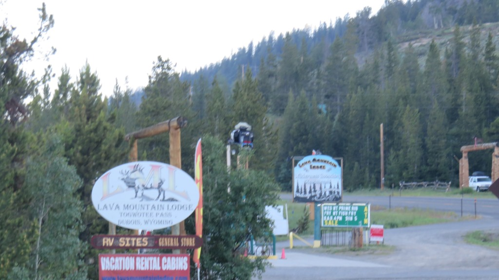
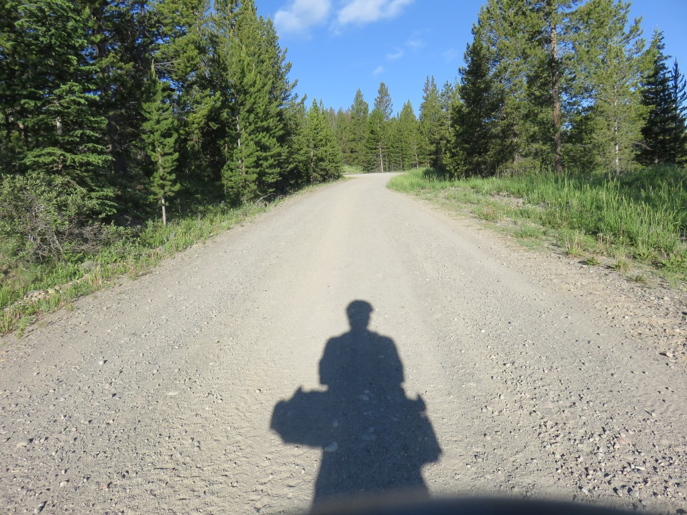
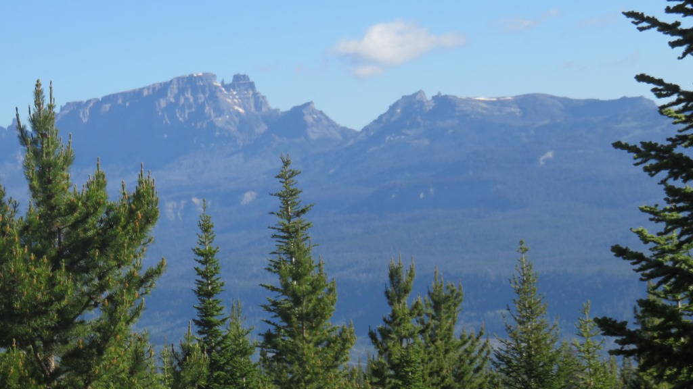
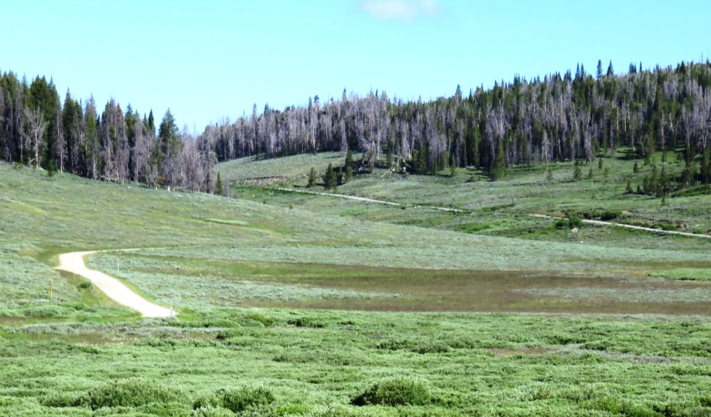
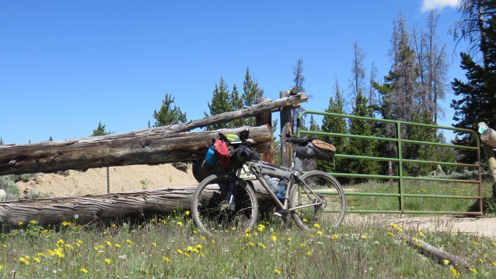
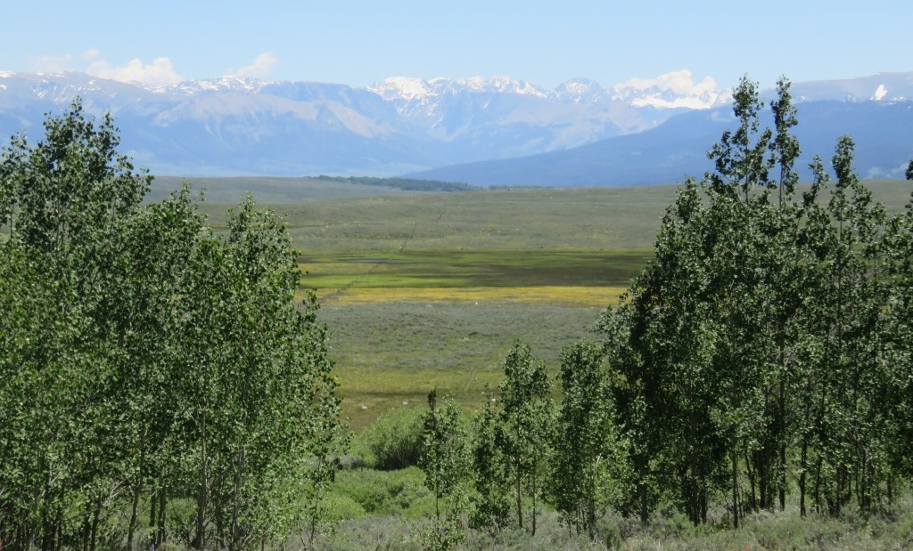
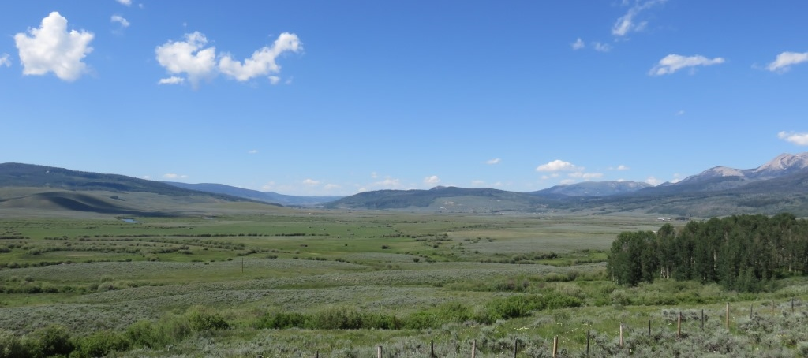
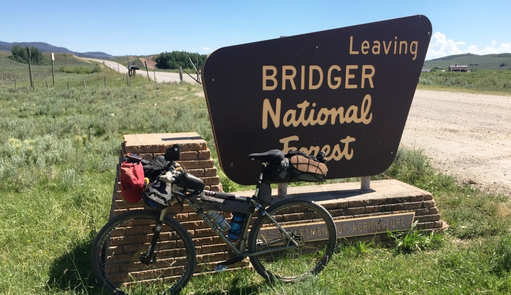

Lava Mountain Lodge to the Devil's Hole Trail

I had a nice meal, laundry and room.I left Lava Mountain Lodge early because I really didn't know what to expect in the climb around Union Pass. Previously the race course had taken the pavement directly over Union Pass. The route was shifted this year to avoid congestion and also provide the riders with tremendous views. Getting to the top was a challenge.


The morning would present two approximaetly five mile climbs up to the pass with a short section for
recovery in between.
In general the roads in Wyoming were very rideable. With the exception of some really steep sections that
was true
for this section.

Starting the day the same way I started most days - me and my shadow.

The initial stages were really wooded so not many pictures. I was mostly trying to make sure I stayed on the purple line because I didn't have the cue sheets for this section. The cuesheets were pretty spare in their descriptions.
This is the section between the two climbs. The road prior to this was one of the toughest I covered. Very steep, very torn up. I couldn't see how an ATV could pass through.

Wide open roads - only a few Quads out todayOn top of the world - part 1
The next 10 miles were probably the most impressive views I had on the trip. I was riding along on top of the divide and on all sides I had an almost limitless view.
Riding along the divide part 2
Came thru this gate to rejoin the original TD trail

Still pretty close to the top ...

... and mountains all around.
I was really happy to be up here. The road to this point had not been easy but getting to this spot really confirmed why I had decided to do this trip. I was amazed again and again during the five plus hours it took me to go through this section.

Back to the flats
The last 40 miles was rolling downhill and south through wide open spaces. The Wind River Range was to the east

Coming off the gravel and back onto a real road.I stopped to take a break in the shade of a park bathroom building which was the only shade for miles. I was joined by a couple who shared what shade there was.
Pinedale, WY - A nice hotel, laundry and a meal
Stayed at the Hampton Inn in Pinedale. I had missed the turn to go off the main road and through town. I realized it after finishing the last hill of the day so ended up taking a highway the last 3 miles. I met Andrew from NZ for dinner. He had ridden through Yellowstone and Jackson for the past few days. With the Wyoming desert coming up for the next 3 days I was glad to have another rider in the vicinity. We would end up mostly in the same places until July 5th.
June 26 - ~83 miles - Lava Mtn Lodge across Union Pass to Pinedale, WY
See full screen map To go places and do things that I've never done before – that’s what living is all about.Text by Jim O'Brien . Photographs by Jim O'BrienTD on Flickr.